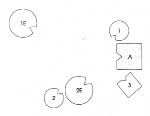
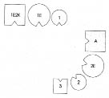

Dizim: Erkek evlilik dışı kızının, annesinin ikinci kocası tarafından evlat edinilmesine izin verir
RAIMUND Psikologum, evliyim, iki çocuğum var. Daha önceki evlilik dışı bir ilişkimden şu anda başka bir kıtada yaşayan bir de kızım var.
HELLINGER Bayağı uzaklara gitmiş. Kaç yaşında?
RAIMUND On altısına basacak. Annesi erkek arkadaşıyla oraya göç etti.
HELLINGER İlişkin nasıl onunla?
RAIMUND Altı yıl önce iki yıllığına Almanya’ya döndüğünde çok iyi bir ilişkimiz vardı. Şimdiyse yaşına uygun bir durumda. Yani bir teşekkür mektubu Noel armağanımın ardından alıyorum, bir de doğum gününden sonra. Arada bir birbirimize bir video kaset yolluyoruz. Aileyi dizmek isterim.
HELLINGER Tamam, diz o zaman.
RAIMUND Eski kız arkadaşımla başlıyorum.
HELLINGER Nasıl? Kiminle başlıyorsun?
RAIMUND Eski kız arkadaşımla.
HELLINGER İlk eşinle başlıyorsun.
RAIMUND Evli değildik onunla.
HELLINGER İlk eşinle başlıyorsun.
RAIMUND Pekâlâ, anlıyor ve önünde tevazuuyla eğiliyorum.
HELLINGER Şöhretine kara çalınan kişiyi koruma altına aldım. Başka kimler var?
RAIMUND Bu ilk eşten olan kızım. Kendisinden bir kızım, bir de oğlum olan ikinci eşim.
HELLINGER Önceden evli ya da sürekli bir ilişkisi olan var mı?
RAIMUND İlk karım. Benden ayrılma nedeni de buydu.
HELLINGER O evlilikten çocuklar var mı?
RAIMUND Hayır. Evliliğin kopma nedeni bu olmuş; adam çocuk istememiş.
HELLINGER Bu önemli bir bilgi. O halde ortada güçlü bir bağ yokmuş. İşin yasal yanı pek bir önem taşımıyor.
RAIMUND Şimdiki karımın biz tanışmadan önce iki yıllık bir ilişkisi varmış. Tanıştığımızda sona ermiş, oldukça gürültülü bir şekilde bitirilmişti.
HELLINGER İkinci eş de önceden evliyse ilişki, ikinci elin birinci el aldığı bir ilişkiden daha iyi olacaktır.
RAIMUND İlk eşimin yeni bir kocası var.
HELLINGER Çocukları var mı?
RAIMUND Hayır ama kocası benim kızımı evlat edindi. Bunun önemi var mı?
HELLINGER Önemi var. Kız bunun öcünü adamdan ağır bir biçimde alır. Böyle bir şey asla yapılmamalı. Ya sen, karşı çıkmadın mı?
RAIMUND Hayır. Onayladım.
HELLINGER Onayladın mı? Aman Tanrım! Çocuğun sana öfke duyar. Onu geri aldığını, bütün haklarıyla senin kızın olarak kalacağını ona söylemek zorundasın. Onu asla başka bir adama veremezsin!
1. Resim
A Adam (=Raimund)
1E İlk eş, 1’in annesi
1 İlk çocuk, kız
2E İkinci eş, 2 ve 3’ün annesi
2 İkinci çocuk, kız
3 Üçüncü çocuk, oğlan
HELLINGER Raimund’a Nasıldı bu sabah gördüğün rüya?
RAIMUND Oğlum kapının önünde duruyordu.
HELLINGER Bu elbette senin kapının önünde olduğun anlamına geliyor. Bunu burada da görebilirsin. –İlk eş nasıl?
İLK EŞ Sırtım ağrıyor. Arkamda çok tuhaf bir şey hissediyorum, hava akımı gibi sanki. Ama o yöne doğru da bakamıyorum. Çok tuhaf.
HELLINGER İlk çocuk nasıl?
İLK ÇOCUK Anneyle yalnızken iyiydim. Şimdi midemde bir ağrı var. Karıncalanma gibi bir his. Nahoş ama korkutucu değil.
HELLINGER Raimund’un temsilcisine Adam nasıl?
ADAM Şimdiki ailemle gayet iyiyim. Ama orada, öteki tarafta ilk eş ve çocukla hoş değildi. Diğer iki çocuk buradaki mekanı koruyor.
HELLINGER İkinci eş nasıl?
İKİNCİ EŞ Çok iyi değil. Adam benim için gerçek bir muhatap değil bir şekilde. Aramızdaki daha çok bir çatışmayı andırıyor.
HELLINGER Öyle de zaten.
İKİNCİ EŞ Çocukların konumu da yerinde değil bana göre. Kızım öyle arkamda durmamalı. Oğlanla daha iyi, çünkü onunla göz temasım var. Kızla ise temas kurmak için başımı iyice çevirmem gerek.
HELLINGER Sırt ağrısı giderek kötüleşen ilk eşe Düzelmek için yana doğru dön. Böyle reaksiyonlarla seni orada bırakamam.
Hellinger ilk eşi kızının yanına yerleştirir.
2. Resim
HELLINGER Küçük kız nasıl?
İKİNCİ ÇOCUK İyi değilim. Kendimi bütün tehlikelere açık, güvensiz ve savunmasız hissediyorum.
HELLINGER Raimund’a İlk kızın duygularını taşıyor.
RAIMUND Çok şaşırtıcı. Sık yazışırlar.
HELLINGER Onun duygularını yaşıyor.
Oğul nasıl?
ÜÇÜNCÜ ÇOCUK Babamı korumak zorunda olduğumu hissediyorum. Kendimi kullanılmış hissediyorum.
HELLINGER Raimund’a O ikisi kapının önünde; yani sen ve oğlun. İkiniz de.
Şimdi ilk önemli değişikliği yapalım bakalım.
Hellinger büyük kızı babasının yanına yerleştirir.
3. Resim

İLK ÇOCUK Burada hoş değil. Biraz daha uzaklaşmak isterdim.
HELLINGER Bir de öyle dene.
Kız babasından biraz uzaklaşır.
İLK ÇOCUK (ikinci eş için) Gözlerini bana dikiyor. Korkutuyor beni.
Hellinger ikinci kocayı ilk eşin yanına yerleştirir.
4. Resim

1E2K İlk eşin ikinci kocası
HELLINGER Büyük kız için nasıl oldu bu?
İLK ÇOCUK Annemin yanımda olması benim için çok daha hoş.
HELLINGER Raimund’un temsilcisine Adamda ne değişti?
ADAM Büyük kızımın gelişi benim için iyiydi. Ama ardından karım bana tehlikeli göründü. Büyük kızıma doğru çekiliyorum ama şimdiki ailemden de ayrılmak istemiyorum. Bölünmüş durumdayım.
HELLINGER Küçük kızda ne değişti?
İKİNCİ ÇOCUK Kendimi arada hissediyorum. Babama doğru hiçbir çekim yok. Deminki gibi güvensizlik hissediyorum. Ablama yönelmek isterdim. Nereye gitmem gerektiğini bilemiyorum. Babama hislerim azaldıkça ablam daha da çekici bir hale geliyor.
HELLINGER Raimund’a Ablası gibi hissediyor kendini. Ve arada kalmış hissediyor.
Hellinger çözüm resmini oluşturur. İkinci evlilikten olan iki çocuk önce ana babanın karşısına, ardından da annenin yanına yerleştirilir.
5. Resim

HELLINGER İkinci eş şimdi nasıl?
İKİNCİ EŞ Çocukların karşımda durması bana uymuyordu. Şimdi daha yakınlar ve kendimi daha rahat hissediyorum.
HELLINGER Böylesi küçük kız için nasıl?
İKİNCİ ÇOCUK Daha iyi. Daha güvenli.
ÜÇÜNCÜ ÇOCUK Benim için de iyi.
HELLINGER Raimund’a Çocuklar sana güvenmiyor. Annelerine güveniyorlar daha çok.
ÜÇÜNCÜ ÇOCUK Büyük kız geldiğinde sırtımdan yük kalkmış gibi hissettim. Birden üzerimden bir baskı kalktı. Şimdi böylesi benim için çok iyi.
HELLINGER Büyük kıza Bir bak bakalım, babana ne kadar yaklaşabiliyorsun.
Kız babasına yaklaşır, ardından annesinin yanına döner.
İLK ÇOCUK Yapamıyorum. Burada, annemin yanında kalmayı yeğlerim. İki kardeşimi de görmek güzel. Tuhaf olan bir şey var; kız kardeş uzaklaştığında gittiği için üzüntü duydum. Ama aynı zamanda da erkek kardeşi görmek beni neşelendirdi. Bu benim için çok yeni. Kendimi kötü hissetmiyorum. Babanın yanında her ikisini de görmeliyim. Bu önemli benim için.
HELLINGER İlk eş şimdi nasıl?
İLK EŞ Harika. İlk kez diğer aile görüş alanım içinde değil. Adamın ikinci kızı kendi kızımdan çok daha fazla gözümün önündeydi.
HELLINGER İlk eşin ikinci kocası nasıl?
İKİNCİ KOCA Burası uygun.
HELLINGER Raimund’a Onu evlatlık vererek kızın üzerindeki hakkını kaybettin. Buna uygun tepki veriyor kızın da.
RAIMUND Evet.
HELLINGER İkinci bir evlilikte ilk evlilik ya da eşin ilk ilişkisinden olan çocuklar asla evlat edinilmemeli. Çocuklar için bu son derece kötüdür ve düzeni bozar.
RAIMUND Böylesinin onun için daha iyi olacağını düşünmüştüm.
HELLINGER Bunlar akılcı görüşler. Ona üzgün olduğunu, her zaman olduğu gibi babası olarak kalacağına güvenebileceğini söyleyerek durumu biraz düzeltebilirsin. Her zaman yanında olduğunu, diğer çocuklarınla sözgelimi miras vb gibi konularda aynı haklara sahip olduğunu söyleyerek. Bu, durumun gerilimini alır. Dizimde yerine geçmek ister misin?
Raimund dizimdeki yerini alarak çevresine bakınır.
RAIMUND Barış içinde. Son derece barışçı bir ortam.
HELLINGER Düzen geldiğinde ortam her zaman barış içindedir. O zaman herkes kendi yerindedir. Büyük kızına yaklaş biraz ve bak bakalım nasıl oluyor?
Büyük kıza Yaklaşmasına razı mısın?
İLK ÇOCUK Tabii! Hiç de olmayacak iş gibi gelmiyor bana. Güler.
HELLINGER Raimund’a Bu bir sonraki adım. (Raimund’un büyük kızını Rita temsil etmektedir.)
Gruba Evlat edinme konusunda bir öykü anlatayım size. Adı “Eve dönüş”.